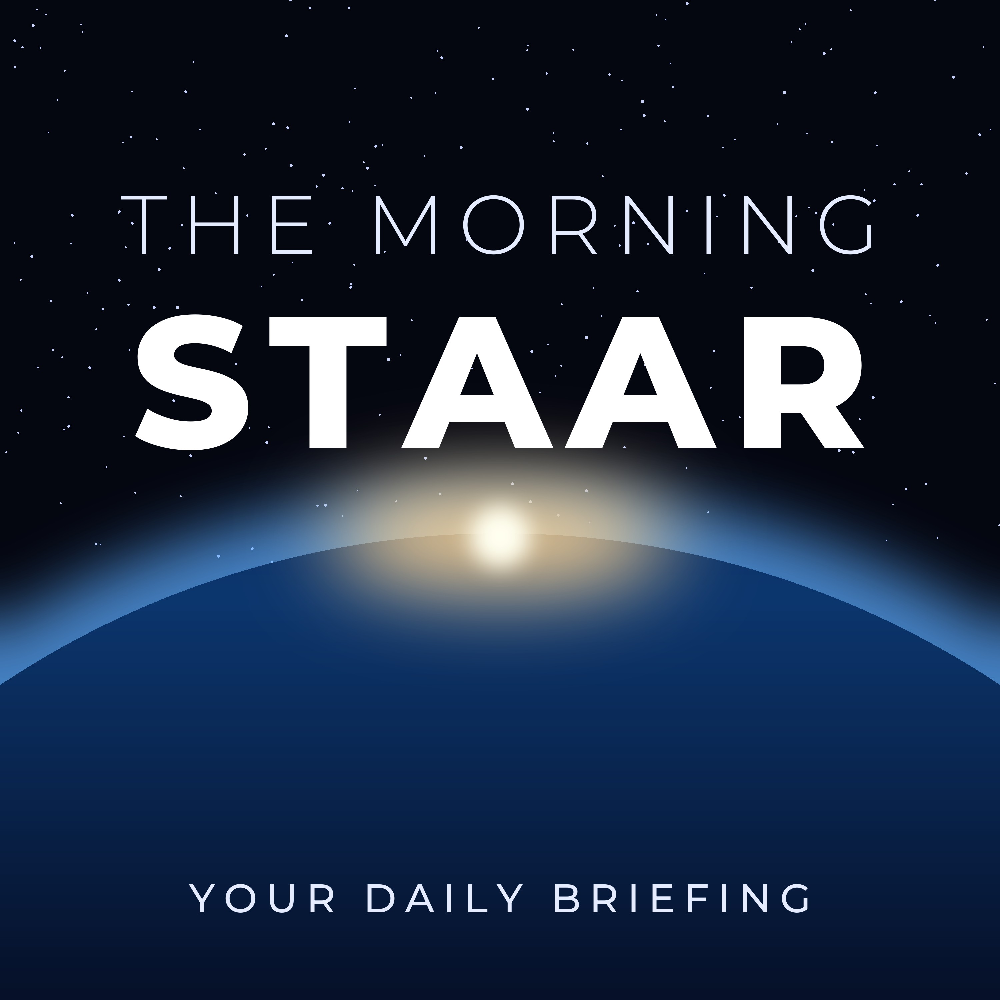

The Morning Staar
Your daily briefing
Podcast feed: https://sarahstaar.github.io/morning-staar/feed.xml
- Thursday 22 October: Tesla Q3 results, SpaceX's record quarter, and the PHP security alertTesla's third-quarter results and robotaxi progress, reported Tesla-SpaceX merger talks, OpenAI's monitoring incidents, SpaceX's Q3 and the Starship double-catch plan, Nvidia's modular data centres, critical PHP flaws, world news, Tesla Time News 691, the Bourgvallées weather and a thought from Maya Angelou. Read by Daniel.